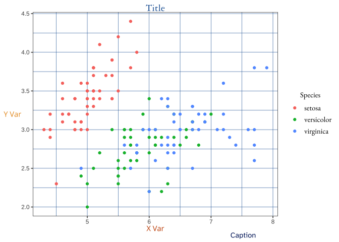

Overview
duke allows users to generate visualizations with Duke’s official suite of colors in a color blind friendly way. By using it alongside ggplot2, you can easily promote accessibility in the Duke community and beyond.
Installation
You can install the official version of duke from CRAN with:
# Install duke directly:
install.packages("duke")Or alternatively, you can install the development version from GitHub:
# install.packages("devtools")
devtools::install_github("aidangildea/duke")Usage
This package is fully integrated with ggplot2, and therefore, allows you to customize several visualization features. Aesthetic functions such as theme_duke() and scale_color_duke() quickly make your graphs visually pleasing and accessible to your audience.
For further information on how to use ggplot2, please visit its GitHub repository.
Example
By using duke functions, you can easily convert your visualizations to Duke official colors.
Create visualizations using ggplot2 package.
library(ggplot2)
library(duke)
plot1 <- ggplot(iris, aes(Sepal.Length, Sepal.Width)) +
geom_point(aes(colour = Species)) +
labs(
title = "Sepal Length vs. Sepal Width",
caption = "Data sourced from iris in datasets package.",
x = "Sepal Length",
y = "Sepal Width"
)
plot2 <- ggplot(iris, aes(Sepal.Length, Sepal.Width)) +
geom_point(aes(color = Sepal.Length)) +
labs(
title = "Sepal Length vs. Sepal Width",
caption = "Data sourced from iris in datasets package.",
x = "Sepal Length",
y = "Sepal Width"
)Then, by pairing them with functions from this package, you can convert them into Duke-branded and colorblind-friendly versions.
plot1 +
theme_duke() +
scale_duke_color_discrete()
plot2 +
theme_duke() +
scale_duke_continuous()